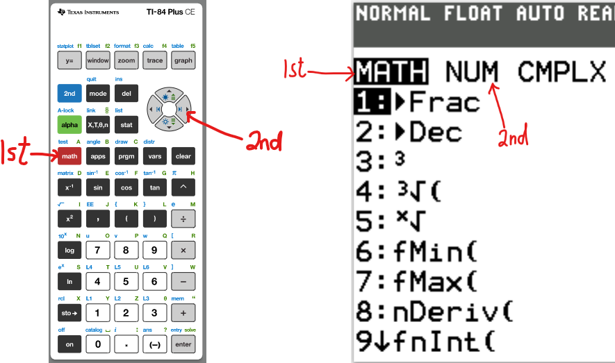
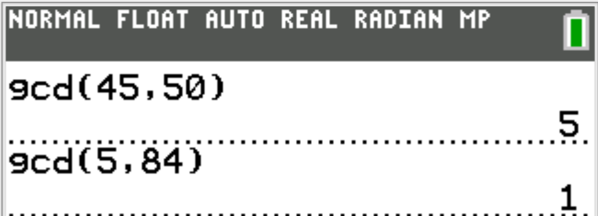
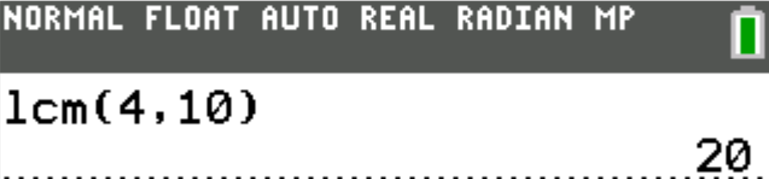
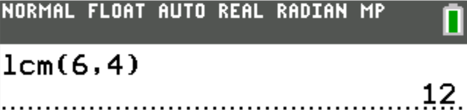

Least Common Multiple (LCM) and Greatest Common Factor (GCF)
Welcome to Our Site
I greet you this day,
For the Classic ACT exam:
The ACT Mathematics test is a timed exam...60 questions in 60 minutes
This implies that you have to solve each question in one minute.
Each of the first 20 questions (less challenging) will typically take less than a minute a solve.
Each of the next 20 questions (medium challenging) may take about a minute to solve.
Each of the last 20 questions (more challenging) may take more than a minute to solve.
The goal is to maximize your time.
You use the time saved on the questions you solve in less than a minute to solve questions that will take more
than a minute.
So, you should try to solve each question correctly and timely.
So, it is not just solving a question correctly, but solving it correctly on time.
Please ensure you attempt all ACT questions.
There is no negative penalty for a wrong answer.
Also: please note that unless specified otherwise, geometric figures are drawn to scale. So, you can figure out
the correct answer by eliminating the incorrect options.
Other suggestions are listed in the solutions/explanations as applicable.
These are the solutions to the ACT past questions on the topics: Least
Common Multiple (LCM) and Greatest Common Factor (GCF).
When applicable, the TI-84 Plus CE calculator (also applicable to TI-84 Plus calculator) solutions are provided
for some questions.
The link to the video solutions will be provided for you. Please
subscribe to the YouTube channel to be notified of upcoming livestreams. You are welcome to ask questions during
the video livestreams.
If you find these resources valuable and helpful in your passing the Mathematics test of the ACT,
please consider making a donation:
Google charges me for the hosting of this website and my other
educational websites. It does not host any of the websites for free.
Besides, I spend a lot of time to type the questions and the solutions well.
As you probably know, I provide clear explanations on the solutions.
Your donation is appreciated.
Comments, ideas, areas of improvement, questions, and constructive
criticisms are welcome.
Feel free to contact me. Please be positive in your message.
I wish you the best.
Thank you.
For the questions where we used the TI-84 Plus CE calculator, here are the basic steps to get the LCM and GCD.
Please note that GCF (Greatest Common Factor), GCD (Greatest Common Divisor), and GCM (Greatest Common Measure)
mean the same thing.
Step 1:

Step 2:
(1.) What is the least common multiple of 50, 30, and 70?
The colors besides red indicate the common factors that should be counted only one time.
Begin with them in the multiplication for the LCM.
Then, include the rest.
First, let us find the GCF of $x^2y^2$ and $xy^3$
The colors besides red indicate the common factors that should be counted only one time.
They are the only ones to be included in the calculation of the GCF.
$
x^2y^2 = \color{black}{x} * x * \color{darkblue}{y} * \color{purple}{y} \\[3ex]
xy^3 = \color{black}{x} * y * \color{darkblue}{y} * \color{purple}{y} \\[5ex]
GCF = \color{black}{x} * \color{darkblue}{y} * \color{purple}{y} \\[3ex]
GCF = xy^2 \\[3ex]
GCF = 45 \\[3ex]
\implies \\[3ex]
xy^2 = 45 \\[3ex]
$
Note: $y$ must be squared in order to compute the GCF
Looking at the options:
1 and 45 will not work.
3 and 15 will not work.
But 5 and 9 would work. Because 9 is a perfect square.
9 is 32
Student: Mr. C, how do you mean?
May you explain? Teacher: Sure.
Let us analyze each option
A. 45
45 is the GCF
This option is incorrect because if $y$ is 45, then $y^2$ would be more than 45
B. 15
This is also incorrect because the square of 15 is greater than 45
C. 9
This is incorrect because the square of 9 is greater than 45
D. 5
This is incorrect because even if we square 5, which gives 25; there is no positive integer whose
product with
25 gives 45
$
Assume\;\; y = 5 \\[3ex]
y^2 = 5^2 = 25 \\[3ex]
x * 25 = 45 \\[3ex]
$
$x$ should be a positive integer, but it is not. It is a decimal. So, this option is incorrect.
E. 3
$
Assume\;\; y = 3 \\[3ex]
y^2 = 3^2 = 9 \\[3ex]
x * 9 = 45 \\[3ex]
$
This option is correct.
Student: I still don't get it. Teacher: Please attend the YouTube Livestream for verbal explanations.
(3.) What is the greatest common factor of 45, 50, and 84?
$
\underline{Prime\;\;Factorization\;\;Method} \\[3ex]
45 = 3 * 3 * 5 \\[3ex]
50 = 2 * 5 * 5 \\[3ex]
84 = 2 * 2 * 3 * 7 \\[3ex]
GCF = 1 \\[3ex]
$
This is because there is no other common factor of the three numbers.
1 is a factor of everything because $1$ * any thing is that thing.
1 was not listed in that method because it is not a prime number.
However, 1 is a factor of those three numbers.

(4.) Two warning signs begin flashing at the same time.
One sign flashes every 3 seconds, and the other sign flashes every 8 seconds.
How many seconds elapse from the moment the 2 signs flash at the same time until they next flash at the
same time?
The question is asking for the Least Common Multiple (LCM) of 3 and 8
$
Numbers = 3, 8 \\[3ex]
3 = 3 \\[3ex]
8 = 2 * 2 * 2 \\[5ex]
LCM = 3 * 2 * 2 * 2 \\[3ex]
LCM = 24 \\[3ex]
$
24 seconds elapse from the moment the 2 signs flash at the same time until they next flash at the same time.
Please see Number (19.) and verify your answer with the calculator.
(5.) What is the greatest common factor of 60, 84, and 126?
The colors besides red indicate the common factors that should be counted only one time.
They are the only ones to be included in the calculation of the GCF.
(6.) Two whole numbers have a greatest common factor of 6 and a least common multiple of 36.
Which of the following pairs of whole numbers will satisfy the given conditions?
Option F. 4 and 9
6 is not a factor of either 4 or 9...NEXT
Option G. 9 and 12
6 is not a factor of 9...NEXT
Option H. 12 and 15
6 is not a factor of 15...NEXT
Option J. 12 and 18
6 is a factor of both
Find the LCM
The colors besides red indicate the common factors that should be counted only one time.
Begin with them in the multiplication for the LCM.
Then, include the rest.
Because the ACT is a timed test, my advice in solving this question is to begin with the highest
number
Why? Because the question is asking for the greatest value.
Begin with the highest number and if it does not work, try the next higher number, and keep going
that way through
the options.
The highest number = 72
So, let us find the LCM of 108 and 72
The colors besides red indicate the common factors that should be counted only one time.
Begin with them in the multiplication for the LCM.
Then, include the rest.
(8.) One welcome sign flashes every 8 seconds, and another welcome sign flashes every 12
seconds.
At a certain instant, the 2 signs flash at the same time.
How many seconds elapse until the 2 signs next flash at the same time?
We need to find the Least Common Multiple (LCM) of 8 and 12
The colors besides red indicate the common factors that should be counted only one time.
Begin with them in the multiplication for the LCM.
Then, include the rest.
$
Numbers = 8, 12 \\[3ex]
8 = \color{black}{2} * \color{darkblue}{2} * 2 \\[3ex]
12 = \color{black}{2} * \color{darkblue}{2} * 3 \\[5ex]
LCM = \color{black}{2} * \color{darkblue}{2} * 2 * 3 \\[3ex]
LCM = 24 \\[3ex]
$
24 seconds elapse until the 2 signs next flash at the same time
Please see Number (21.) and verify your answer with the calculator.
(9.) What is the least common multiple of 70, 60, and 50?
The colors besides red indicate the common factors that should be counted only one time.
Begin with them in the multiplication for the LCM.
Then, include the rest.
(10.) Rya and Sampath start running laps from the same starting line at the same time and in
the same direction on a certain indoor track.
Rya completes one lap in 16 seconds, and Sampath completes the same lap in 28 seconds.
Both continue running at their same respective rates and in the same direction for 10 minutes.
What is the fewest number of seconds after starting that Rya and Sampath will again be at their starting
line at the same time?
The question is simply asking for the LCM (least common multiple) of 16 and 28 because of
fewest number of seconds
Keep in mind that it is not just the common multiple of 16 and 28, but the least common multiple
$
\underline{Prime\;\;Factorization\;\;Method} \\[3ex]
16 = \color{black}{2} * \color{darkblue}{2} * 2 * 2 \\[3ex]
28 = \color{black}{2} * \color{darkblue}{2} * 7 \\[3ex]
LCM = \color{black}{2} * \color{darkblue}{2} * 2 * 2 * 7 \\[3ex]
LCM = 112 \\[3ex]
$
The next time Rya and Sampath will again be at their starting line is 112 seconds
Please see Number (21.) and verify your answer with the calculator.
(11.) What is the least common multiple of 60, 70, and 90?
The colors besides red indicate the common factors that should be counted only one time.
Begin with them in the multiplication for the LCM.
Then, include the rest.
(12.) One neon sign flashes every 6 seconds.
Another neon sign flashes every 8 seconds.
If they flash together and you begin counting seconds, how many seconds after they flash together will they
next flash together?
Similar to Question (19.); the question is asking for the Least Common Multiple (LCM) of 6 and 8
The colors besides red indicate the common factors that should be counted only one time.
Begin with them in the multiplication for the LCM.
Then, include the rest.
$
Numbers = 6, 8 \\[3ex]
6 = \color{black}{2} * 3 \\[3ex]
8 = \color{black}{2} * 2 * 2 \\[5ex]
LCM = \color{black}{2} * 3 * 2 * 2 \\[3ex]
LCM = 24 \\[3ex]
$
24 seconds after they flash together, they will next flash together
Please see Number (19.) and verify your answer with the calculator.
(13.) What is the least common multiple of the numbers 1, 2, 3, 4, 5, and 6?
The colors besides red indicate the common factors that should be counted only one time.
Begin with them in the multiplication for the LCM.
Then, include the rest.
(14.) Two whole numbers have a greatest common factor of 4 and a least common multiple of 24.
Which of the following pairs of whole numbers will satisfy the given conditions?
Option F. 4 and 8
4 is the greatest common factor of 4 and 8
However, 8 is the least common multiple of 4 and 8
This option does not work...NEXT
Option G. 4 and 12
4 is the greatest common factor of 4 and 12
However, 12 is the least common multiple of 4 and 12
This option does not work...NEXT
Option H. 8 and 12
4 is the greatest common factor of 4 and 12
Let us find the least common multiple of 8 and 12
The colors besides red indicate the common factors that should be counted only one time.
Begin with them in the multiplication for the LCM.
Then, include the rest.
The colors besides red indicate the common factors that should be counted only one time.
Begin with them in the multiplication for the LCM.
Then, include the rest.
(16.) During a promotion, a radio station gave every 35th caller a T-shirt and gave every 50th caller a
concert ticket.
Given that 1,000 people called during the promotion, how many callers received both a T-shirt and a
concert ticket?
The question is asking for the Least Common Multiple (LCM) of 35 and 50 up until 1000
The colors besides red indicate the common factors that should be counted only one time.
Begin with them in the multiplication for the LCM.
Then, include the rest.
$
Numbers = 35, 50 \\[3ex]
35 = \color{black}{5} * 7 \\[3ex]
50 = 2 * \color{black}{5} * 5 \\[5ex]
LCM = 2 * \color{black}{5} * 7 * 5 \\[3ex]
LCM = 350 \\[3ex]
$
The 350th person will receive both a T-shirt and a concert ticket
The 700th person will receive both a T-shirt and a concert ticket
The next person (700 + 350 = 1050th person) is more than 1000, hence only 2 people will receive both
a
T-shirt and a concert ticket.
You may also find the quotient of 1000 and 350 (do not include the remainder because human beings are whole
number people).
1000 ÷ 350 = 2.857142857
(17.) What is the least common multiple of 80, 70, and 30?
The colors besides red indicate the common factors that should be counted only one time.
Begin with them in the multiplication for the LCM.
Then, include the rest.
(18.) One neon sign flashes every 6 seconds.
Another neon sign flashes every 8 seconds.
Given that the signs sometimes flash simultaneously how many seconds are there between consecutive
simultaneous flashings?
Similar to Question (19.); the question is asking for the Least Common Multiple (LCM) of 6 and 8
The colors besides red indicate the common factors that should be counted only one time.
Begin with them in the multiplication for the LCM.
Then, include the rest.
Please see Number (19.) and verify your answer with the calculator.
(19.) One caution sign flashes every 4 seconds, and another caution sign flashes every 10 seconds.
At a certain instant, the 2 signs flash at the same time.
How many seconds elapse until the 2 signs next flash at the same time?
The question is asking for the Least Common Multiple (LCM) of 4 and 10
The colors besides red indicate the common factors that should be counted only one time.
Begin with them in the multiplication for the LCM.
Then, include the rest.
$
Numbers = 4, 10 \\[3ex]
4 = \color{black}{2} * 2 \\[3ex]
10 = \color{black}{2} * 5 \\[5ex]
LCM = \color{black}{2} * 2 * 5 \\[3ex]
LCM = 20 \\[3ex]
$
20 seconds will elapse until the 2 signs next flash at the same time.

(20.) What is the least common denominator of the 3 fractions $\dfrac{2}{15}, \dfrac{5}{6}, \;\;and\;\;
\dfrac{7}{8}$ ?
The Least Common Denominator (LCD) of the 3 fractions is the Least Common Multiple (LCM) of the 3 fractions.
So, let us find the LCM of 15, 6, and 8
The colors besides red indicate the common factors that should be counted only one time.
Begin with them in the multiplication for the LCM.
Then, include the rest.
(21.) Mary takes 2 medications throughout the day and night.
One medication is to be taken every 6 hours and the other is to be taken every 4 hours.
If Mary begins taking both medications at 7:00 A.M. and takes both medications on schedule, how many
hours later will
it be when she next takes both medications at the same time?
We need to find the Least Common Multiple (LCM) of 6 and 4
The colors besides red indicate the common factors that should be counted only one time.
Begin with them in the multiplication for the LCM.
Then, include the rest.
$
Numbers = 6, 4 \\[3ex]
6 = \color{black}{2} * 3 \\[3ex]
4 = \color{black}{2} * 2 \\[5ex]
LCM = \color{black}{2} * 3 * 2 \\[3ex]
LCM = 12 \\[3ex]
$
12 hours later, Mary will take both medications at the same time.
If we are asked to find the actual time, then it will be:
7:00 AM + 12 hours
= 19
= 7:00 PM
At 7:00 PM, Mary will take both medications at the same time.

(22.) One construction sign flashes every 6 seconds, and another construction sign flashes every 10 seconds.
At a certain instant, the 2 signs flash at the same time.
How many seconds elapse until the 2 signs next flash at the same time?
The question wants us to find the Least Common Multiple (LCM) of 6 and 10
The colors besides red indicate the common factors that should be counted only one time.
Begin with them in the multiplication for the LCM.
Then, include the rest.
$
Numbers = 6, 10 \\[3ex]
6 = \color{black}{2} * 3 \\[3ex]
10 = \color{black}{2} * 5 \\[5ex]
LCM = \color{black}{2} * 3 * 5 \\[3ex]
LCM = 30 \\[3ex]
$
30 seconds elapse before the 2 signs next flash at the same time.
(23.) The greatest common divisor of 84, 90, and 66 (that is, the largest exact divisor of all three numbers)
is:
The colors besides red indicate the common factors that should be counted only one time.
They are the only ones to be included in the calculation of the GCF.
(24.) One neon sign flashes every 4 seconds, and another neon sign flashes every 6 seconds.
At a certain instant, the 2 signs flash at the same time.
How many seconds elapse until the 2 signs next flash at the same time?
The question is asking for the Least Common Multiple (LCM) of 4 and 6
The colors besides red indicate the common factors that should be counted only one time.
Begin with them in the multiplication for the LCM.
Then, include the rest.
$
Numbers = 4, 10 \\[3ex]
4 = \color{black}{2} * 2 \\[3ex]
6 = \color{black}{2} * 3 \\[5ex]
LCM = \color{black}{2} * 2 * 3 \\[3ex]
LCM = 12 \\[3ex]
$
12 seconds will elapse until the 2 signs next flash at the same time.